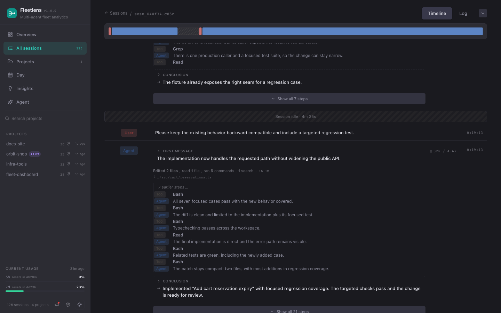
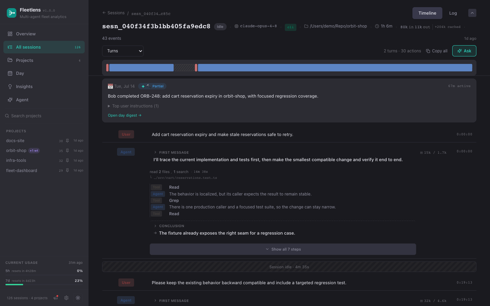
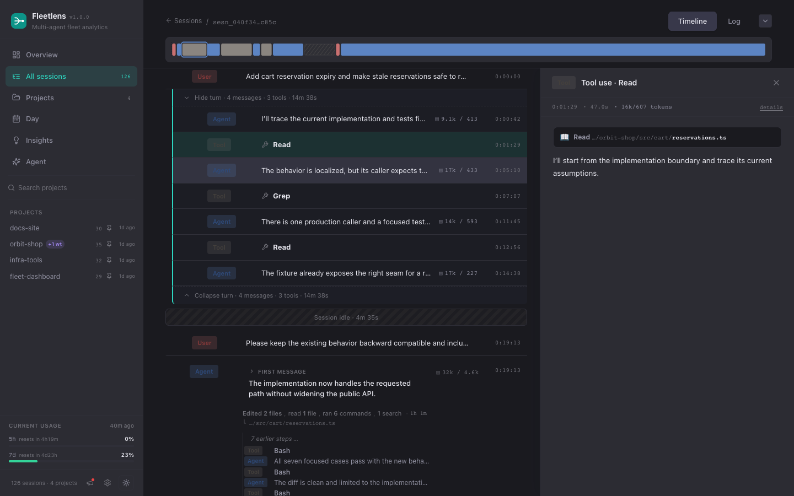
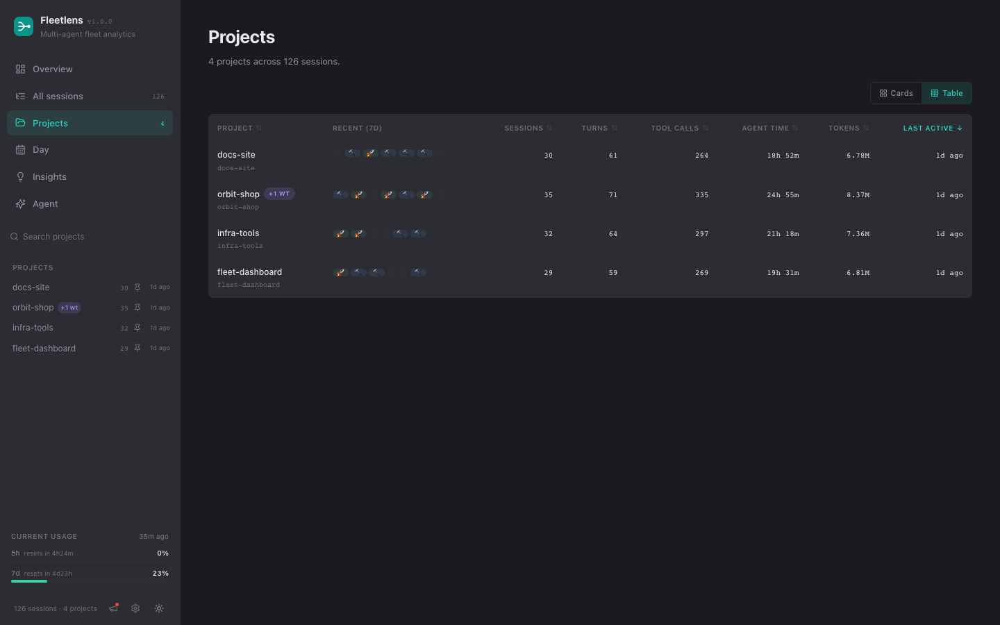
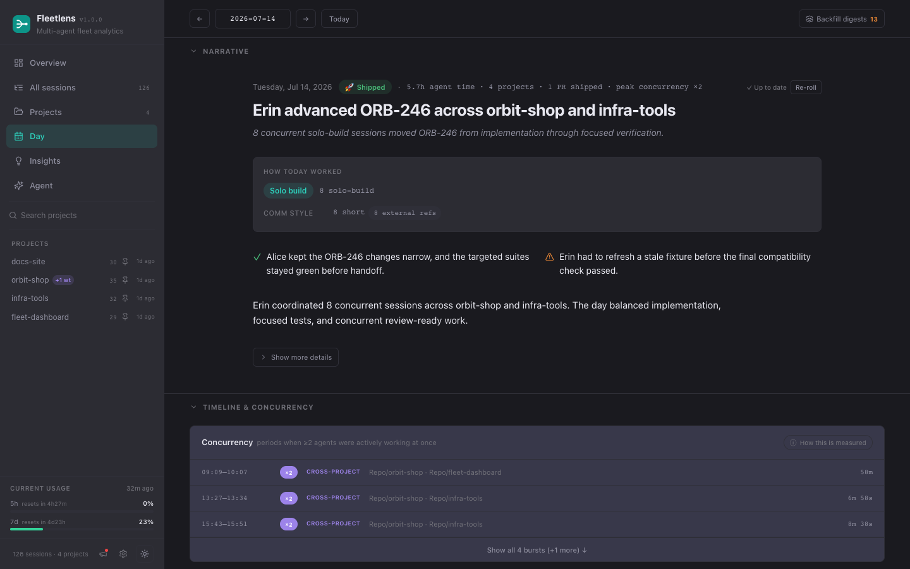
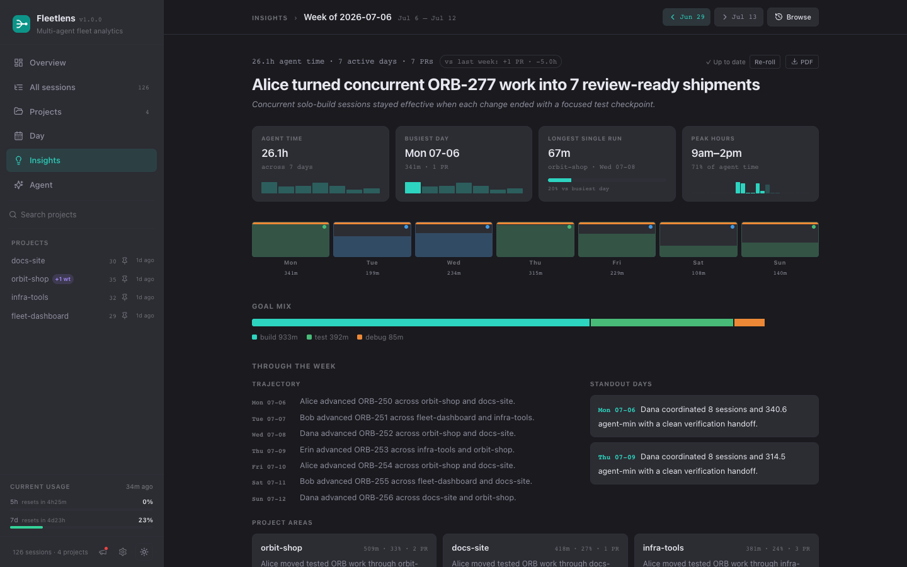
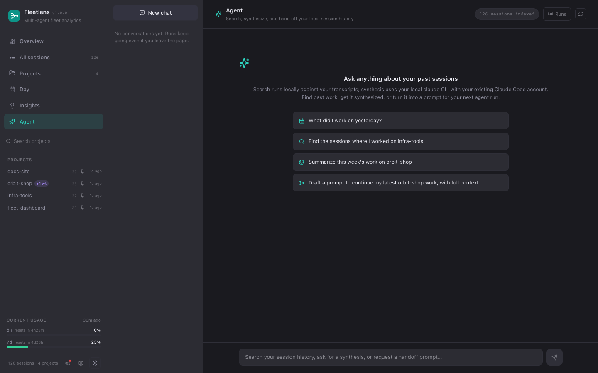
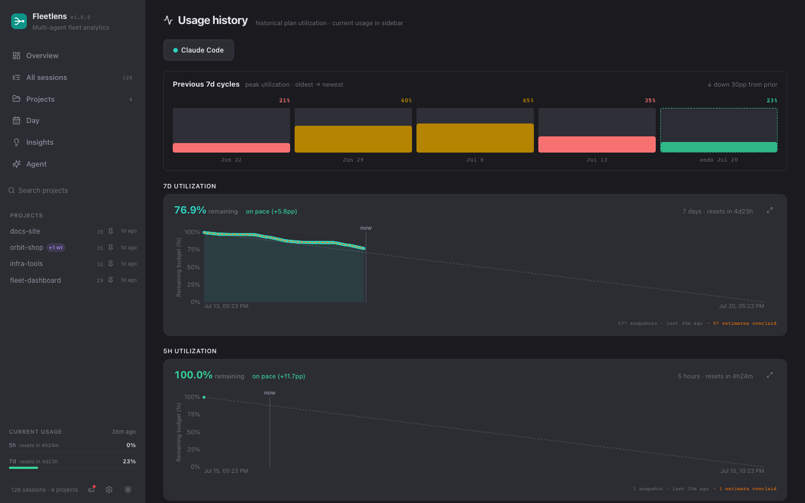

Everything you can see, measure, and ask locally.
The Local Edition is a complete private dashboard for the agent work already recorded on your machine. It works without an account or database, and Team Edition is an optional sharing boundary when you are ready to compare selected rollups with a team.
Fleetlens reads provider history, turns different transcript formats into one model, derives explainable signals, and gives you several ways to explore them. Detailed session data stays on this machine.
Find the right surface
See the shape of your work
/ brings together sessions, agent time, tools, turns, tokens, estimated cost, projects, recent activity, and the heatmap.
How it works: parser analytics calculate the headline numbers locally, while the dashboard refreshes when local history changes.
Find a particular run
/sessions lets you search and inspect normalized sessions across supported agent sources.
How it works: provider adapters turn different transcript files into common session metadata with timestamps, models, projects, and outcomes.
Understand the exact work
/sessions/[id] shows the timeline, turns, tool calls, tokens, idle gaps, plans, subagents, workflows, and shipping signals for one session.
How it works: the detail view reads the timestamped event stream locally and uses active segments to separate work from time away.
See work by repository
/projects and /projects/[slug] roll sessions up by project and retain worktree context.
How it works: Fleetlens removes the /.worktrees/<name> suffix from a working directory so worktree sessions belong to their canonical project.
See when work overlapped
/day opens the daily timeline, activity bands, idle gaps, and concurrency bursts across projects.
How it works: segments are clipped into every local day they touch; overlaps under one minute are dropped and nearby overlaps within ten minutes are merged.
Track provider capacity
/usage shows plan utilization by agent, current cycles, previous cycles, and longer-term trends when snapshots exist.
How it works: the local daemon polls available provider usage and appends snapshots to ~/.cclens/usage.jsonl about every five minutes.
Turn history into a review
/insights provides weekly retrospectives; /digest organizes day, week, and month review pages from local entries.
How it works: compact capsules and period bundles bound the data sent to the optional local AI process; raw transcripts do not leave the local pipeline.
Ask about your own history
/agent searches local history and helps create handoffs; /runs shows live local LLM execution traces.
How it works: search runs against a local index; answer synthesis runs your local claude CLI with your existing Claude Code account, the same as other AI features. Run events stream locally to /runs.
Keep the local service useful
/settings controls daemon auto-start, the macOS menu bar widget, provider credentials, and optional AI features.
How it works: local settings and ~/.cclens state control the daemon; the native widget reads the local usage log.
The sidebar and the widgets that follow you
Outside of exported PDFs, every page shares the same navigation rail on the left and the same floating widgets in the bottom corner. They carry real information, not just chrome.
Navigate, search, and pin
The rail lists Overview, All sessions, Projects, Day, Insights, and Agent — All sessions and Projects each carry a live count next to them. A search box filters the project list underneath; a pin toggle on each project row keeps your regulars — say, orbit-shop — above the rest on this browser, and a project spanning more than one worktree shows a small "+N wt" badge next to its name.
Two glanceable readouts
Below the project list, a compact usage gauge mirrors your 5-hour and 7-day Claude plan windows as thin bars tinted by pace, with a reset countdown and when it was last captured — click through for the full history on /usage. Once this machine is paired with a team, a one-line "Team: <name>" status sits underneath with a health dot that ages from green to amber to red the longer it has been since the last successful sync, and a tooltip with the exact time and any sync error.
What's live, what's running
A pulsing "Live · N" pill in the bottom-right corner expands into a short list of sessions active in roughly the last minute — project, last message, a link straight in. Beside it, a "Jobs · N" pill tracks background digest and PDF-export work so a generate you started on another page doesn't feel like it disappeared; it hides itself entirely once nothing is queued or running.
Two one-time nudges
A dismissible banner offers to install the native menu bar widget the first time it notices you haven't. A separate banner appears once, right after you pair with a team, summarizing exactly what will and won't sync before you've had a chance to look for yourself. Both close with an × and don't come back.
See the Local Edition workflow
These sanitized fixture screens show the normal path from fleet-level signal to one exact session.



All screenshots use sanitized fixture data; no private transcript content is included.
Every surface, in detail
The cards above tell you which page to open. This section walks through what's actually on each one — every tab, drawer, and control you can reach.
Session detail, tab by tab
Every session page opens on four tabs, though two of them only appear when there's something to show.
| Tab | When it appears | What it shows |
|---|---|---|
| Timeline | Always, and open by default | The turn-by-turn transcript, tool calls, and idle gaps. |
| Workflows | Only if the session ran a multi-agent workflow | Each workflow run broken into its agents and phases. |
| Team | Only on a lead session that actually orchestrated a team | A shared timeline and a table of every teammate's turns. |
| Log | Always | Every event as a raw, collapsible list — the fallback for tracing something the other tabs have already summarized. |
The header above the tabs carries the essentials at a glance: a Live, Running, or Idle badge, the model, whether it ran from the terminal or elsewhere, the project with its repository, branch, and worktree, agent time, a token stat, an event count, workflow and sub-agent counts, and a shipped-PR badge when Fleetlens detects one. Scroll down and the header collapses to just the timeline overview described below, leaving more room for the transcript; scroll back up and it returns.
Transcript and turns. By default, each back-and-forth between you and the agent collapses into one row: what changed ("Edited 3 files, read 2 files, ran 1 command · 5m 12s"), the last file touched, up to a dozen notable steps with a "+N more" for the rest, and an expandable conclusion — or a pulsing "In progress" note if that turn is still running. A "Show all steps" link expands a turn into its individual rows in place. A filter dropdown switches between Turns, all meaningful actions, every raw event, user-only, agent-only, tool-only, or errors-only. Consecutive tool calls collapse into a single line like "Bash ×3 · Read ×2 · +2 more," and a copy-all control copies everything currently visible as plain text.
Tool-call cards. Opening a tool call renders a card built for that tool instead of raw data: a file write shows the full new content, an edit shows a red/green diff, a read shows the file and line range, a terminal command shows its description and the exact command (with a "background" badge for detached ones), a search shows the pattern and path, and a checklist renders as a list of done, in-progress, and pending items. Anything else falls back to a formatted view of its inputs.
Timeline overview. A sticky strip above the transcript renders the whole session as one horizontal bar — one block per row or per collapsed turn, colored by who or what it was (you, the agent, a tool, an error). Sub-agent and workflow lanes sit underneath it, colored by type; purple markers show where a pull request was opened, and amber markers show where the session's memory had to be rebuilt from scratch after a long pause. A line tracks your current scroll position as you read. Click any block to jump the transcript there, click a sub-agent or workflow lane to open its detail, and hover anything for a tooltip with timing and token counts.

Multi-day sessions. For a session that runs across midnight, a day picker above the timeline overview lets you view it one day at a time instead of everything squashed together, defaulting to the most recent active day (or the live tail, if it's still running). An "All days" option shows the whole thing ungrouped, and inline "Start of <day>" and "End of <day>" markers appear in the transcript at each boundary.
Event inspector. Click any row to open a right-side panel with the full detail: a title (Message, Tool use, Interrupted, a background task, and so on), timing and token counts, and the actual content — rendered as markdown, a collapsible "Thinking" block, the matching tool card, or the tool's result. A "details" toggle reveals the underlying model and request identifiers, useful when you're troubleshooting rather than just reading.

Sub-agents. Clicking a sub-agent lane opens a panel showing what it was asked to do, its model, how long it ran, its own token breakdown, which tools it used, and its final result — plus a "Jump to parent" link back to the exact spot in the transcript that dispatched it.
Workflows tab. A header totals the runs, the agents spawned, and the tokens they used across the whole session. Each workflow appears as a collapsible card — name, status, agent count, and mini stats — that expands into its phases; where agents were spawned, phase tabs list each one with its state, model, last action, and duration, and clicking one opens its task, steps, and result. Clicking a workflow lane on the timeline overview jumps straight to and highlights the matching card.
Team tab. Appears only on a lead session that actually orchestrated a multi-agent team — for example, a lead session that fanned work out to teammates named Alice and Bob. It shows a shared timeline across every teammate alongside a table of their turns. On the lead's own Timeline tab, inbound teammate messages are hidden behind a banner pointing here instead, since they read more like background chatter than something you'd follow turn by turn. A member's own session page carries a "back to team lead" link at the top.
Log tab. A raw, line-by-line record of every event in the session — type, timestamp, role, model, token counts, and so on — each row collapsible into its full detail.
Tokens and cost. The header's token stat expands on hover into an input/output/cache breakdown (a cache read costs roughly a tenth of a fresh input token). Whenever an idle gap or a context compact forces the session's memory to be rebuilt, a small badge notes how many tokens were rewritten and the rough cost, distinguishing a full rebuild from a partial one.
Live tail. While a session is active, a LIVE badge pulses in the header and the transcript auto-scrolls to follow new turns as they stream in, with a "Following live" indicator you can click to pause. Scrolling up yourself pauses the follow automatically and swaps in a "Jump to latest" button instead.
Ask drawer. An "Ask" button in the toolbar opens a panel for asking the local AI about just this one session: four one-click starting points — identify errors, analyze performance, trace the conversation's flow, suggest improvements — plus a free-text box, with the answer streaming in as it's written. This conversation isn't saved; closing the drawer or leaving the page clears it, unlike the persistent conversations in Agent.
Shipped PRs and inline digests. A detected pull request shows up as a purple marker on the timeline overview and as a header badge ("PR #142: fix checkout retry" or "3 PRs shipped"). Wherever a day boundary falls inside the transcript, if that day already has an AI digest, it renders inline right there — outcome, active time, a short summary, the friction you hit, and a link to open the full day's digest.
Projects, one repository at a time

Opening a project from /projects lands on /projects/[slug], which layers the same six metric cards you see on Overview — scoped to that project alone — on top of a few project-specific panels.
Aggregated local folders. A button opens a modal listing every folder Fleetlens has grouped under this project: its path, which worktrees live there, a chip showing whether it's on the default branch or a feature branch, a "gone" chip if the folder no longer exists on disk, its session count, and a link to its GitHub remote when one is detected. Each row has an "Open folder" action that reveals it in your file manager, disabled when the folder is gone.
Recent days. A seven-day grid shows one card per day with an outcome glyph, active minutes, and pull-request count, each linking into that day's digest, with a small trend line underneath showing how helpful the AI rated those days.
Pull requests shipped. When Fleetlens detects at least one pull request shipped from this project, a panel lists each one — how long ago, the title, roughly how far through the session it landed — linking back to the exact session.
Day: the narrative and the timeline
/day opens on two independently collapsible sections stacked one above the other: Narrative (the day's AI digest) and Timeline & concurrency (the Gantt-style chart already described on the card above). If every session that day ran under a minute — a pure warm-up day — the Narrative section hides itself automatically instead of showing an empty summary. A day with no activity at all shows a plain notice in place of empty charts, and a future date shows a notice with a link back to today.
Date navigation. Prev and Next arrows step one day at a time; the date button between them opens a small calendar popover. Each day in that calendar is tinted by how much agent time it had, with a small purple dot marking any day that had overlapping sessions — hover a day for its session count, active time, and peak concurrency before you click into it. A "Today" shortcut jumps back to the present.

The narrative. A headline sits above an outcome badge, agent time, project count, PR count, and peak concurrency for the day. A "How today worked" section breaks down the dominant way you worked, which of your own sub-agents and skills you used versus stock ones, how you tended to phrase requests, and how often you interrupted or steered mid-run. Below that: what went well, what hit friction, the narrative paragraph itself, and — behind a "Show more details" toggle — a suggestion for tomorrow, a per-project work breakdown, the day's shipped list, and every session that day with a one-line summary.
If a day hasn't been generated yet, a Generate button kicks it off with live progress underneath; once it exists, a Re-roll button regenerates just the narrative without reprocessing the underlying sessions, and a PDF button next to it downloads a clean, print-ready copy of the digest.
Catching up on older days. A "Backfill digests" button opens a panel over the last 30 days showing which are empty, pending, or already generated, so you can select a stretch and generate them in one pass instead of visiting each day on its own.
If you have an old link to /digest or /parallelism, it still works — both now redirect straight into the current /day view.
Insights: weekly and monthly retrospectives
/insights opens on the most recently completed week. A sticky bar at the top shows a breadcrumb, Prev/Next arrows for stepping between periods (dimmed at the ends of the range, and styled differently when a period hasn't been generated yet), and a "Browse" button that opens a history list of recent weeks and months — each row showing its headline and how much shipped — so you can jump straight to a specific one instead of stepping through them in order.
Week digest. The flagship review: a headline and key pattern, a stats strip (agent time with a seven-day mini trend, your busiest day, your longest single run, and your peak working hours), a colored bar for each day of the week showing outcome and how helpful the AI rated it, a goal-mix bar, and a "Through the week" walk-through — day-by-day notes, one or two standout days with why they stood out, and which project areas you spent time in.

Top sessions. Below that, a "Top sessions this week" section picks out up to three of the week's most significant runs, one per project — weighted by how long they ran, how much they delegated, and what they shipped — and gives each its own card: why it mattered, what happened, what worked, what hit friction, and a small timeline marking the moments (a steering nudge, a burst of sub-agent work, a long autonomous stretch, a shipped PR) that made it notable.
Findings. What worked, what stalled, what surprised you, and where to lean next follow, each grounded in a quoted moment from a specific day so you can trace the claim back to its source. A shipped-PR list closes it out, collapsed after ten.
Month digest. Simpler by design: a headline, a per-week helpfulness strip, standout weeks, a week-by-week trajectory, a paragraph on recurring friction, one suggestion, and a project breakdown — no top-sessions or findings sections, since those already live at the week level.
Generating and exporting. A Generate button appears whenever a period has entries but no fresh narrative yet, with live progress underneath it as it enriches sessions and then composes the writeup; once fresh, it collapses to an "Up to date" note plus a Re-roll button that redoes just the writeup. A PDF button appears next to it once any digest exists, downloading a clean, print-ready copy of exactly what you're looking at.
Agent: chatting with your own history
/agent is a full chat interface over your entire local history, not just one session. A left rail lists your past conversations — each keeps running even if you close the tab, and reopening one replays exactly what happened while you were away.

Starting a chat. An empty conversation offers four suggested prompts, personalized to your actual history when the local AI is on (falling back to generic examples otherwise) — things like "What did I work on yesterday?" or "Draft a prompt to continue my most recent feature work in orbit-shop." Click one, or start typing in the composer at the bottom; Enter sends, Shift+Enter adds a line. While the agent is working, the send button becomes a Stop button, and the composer reminds you that you can leave and come back. Fleetlens caps this at three conversations running at once across every chat.
Watching it work. Replies stream in as they're written, interleaved with small chips showing which local-search tool it's using and what it found — searching sessions, opening one, listing projects — each flipping to done or error once it resolves. It only cites a session it actually looked at, as a link straight into that session's detail page; anything it didn't verify renders as plain text instead of a dead link.
Handoffs. Ask it to draft a handoff and the reply includes a distinct "Handoff prompt" card — a self-contained brief covering the goal, decisions made, gotchas, and next steps — with a Copy button, ready to paste into your next agent session.
Search index. A small chip in the header shows how many sessions are indexed, or its progress while building; a manual refresh button rebuilds it after a run of new sessions lands, and the chat's search draws on this same index to answer your questions.
Usage: plan capacity by provider
/usage opens with one tab per provider that has any recorded history, plus Claude Code always present as the baseline. A pill in the top corner names your plan (for example, "Claude Pro Max" with its monthly price), and a footer line notes when it was last polled and how many snapshots exist, with a caveat where a provider's window works differently — a shared weekly pool instead of a rolling five-hour one, for instance.

Burndown charts. Each window — five-hour, seven-day, and monthly where it applies — renders as a chart of remaining budget over the cycle, with a dashed diagonal marking an even, ideal burn rate and a live marker showing where you are right now against it: on pace, below pace, or headed toward running out early. On Claude Code only, a second dashed line estimates where you'd be if history had been tracked the whole cycle, shown in a visually distinct color so it's never mistaken for a real reading. An expand icon on any chart opens a full-screen view with date-range presets, including one snapped exactly to the current billing cycle.
Previous cycles. Below the charts, a row of bars shows your peak usage in each of the last several seven-day cycles, colored green when you used most of what you had and red when a cycle went mostly unused; the current, in-progress cycle is colored by pace instead so a modest peak halfway through a cycle doesn't read as a miss. A one-line hint compares your last two completed cycles.
Per-provider cards. Grok shows a single shared weekly pool with its reset time. GitHub Copilot shows a monthly AI-credit gauge, and — on an org plan that doesn't disclose an individual ceiling — an explicit "limit not reported" note with links out to verify your own usage in GitHub billing, rather than showing a made-up percentage. Z.ai shows a monthly web-search meter matching what its own dashboard reports.
Settings and the menu bar widget
/settings groups four things: whether the daemon starts automatically, the native menu bar widget, your Z.ai key, and AI feature toggles.
Z.ai API key. Paste a key and Save checks it against Z.ai directly before storing anything — a bad or expired key is rejected with the real error rather than silently saved. Once configured, the field collapses to a masked hint with Change and Remove buttons; removing a key clears its data from the usage views immediately rather than waiting for the next poll. A link out to Z.ai's own key page sits alongside the form.
AI features. A master "Enable AI digests and enrichment" checkbox turns every AI-written surface on or off at once — digests, session summaries, Agent, Ask, and suggestion chips — and is on by default. Two more checkboxes, dependent on the master one, control whether yesterday's digest and last week's narrative generate automatically when the local service starts, each running at most once per day or week respectively. A Save button confirms with a brief "Saved" note or an error message.
The menu bar widget. On macOS, an optional status-bar strip shows a brand-colored icon next to a compact two-line percentage for each provider you have data for — five-hour usage on top, seven-day underneath — so you can tell providers apart at a glance.
Click it open and a popover breaks each provider out into its own bar (or a monthly-credit gauge for Copilot), with a thin tick marking an even, on-pace burn rate and a live countdown to reset. From there, a Dashboard button opens the full app, a refresh button forces an immediate poll, and a quit button closes the widget. Install, open, and remove it from the Settings page, or with the equivalent terminal command.
A simple path through the app
Open Overview
Start with the overall shape of sessions and agent time.
Choose a slice
Move into a project, day, provider, or usage cycle.
Drill into detail
Open the exact session, tools, turns, and idle gaps.
Make sense of it
Use Insights, Digests, or the local Agent to review patterns.
Share by choice
Pair with Team Edition only when selected rollups are useful.
Local by default, share by choice
Keep it private
Read the privacy model to see which raw files, derived views, and settings stay on the machine.
Understand the rules
Use the How it works page for the data path and the definitions behind agent time, projects, days, and concurrency.
Connect a team later
When sharing is useful, follow member onboarding or send an admin to Team Edition deployment.
Keep it healthy
Use the operations guide for lifecycle commands, logs, updates, and troubleshooting.
Start with the beginner walkthrough. It takes you from opening a terminal to seeing the first local session.